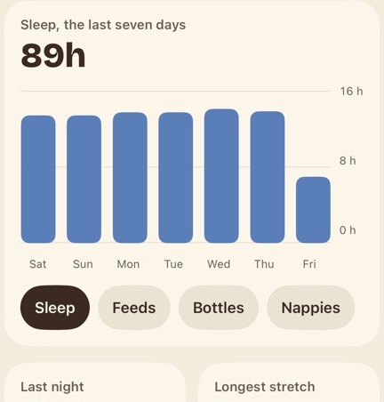

First run, refined
One flow from the welcome screen to Today, with the choices made and what is still open listed at the end. None of it is built.
Nine screens, the same number as today
The solid row is a new parent's path, ending on Today. The dashed ones are the other ways in, shown further down. Two pages of text become three with something to look at, "How much to see" moves to Settings, and the plain "You're set" becomes the family screen.
Welcome
Welcome
Her face, the name and a line under it, in the scene for the real time of day. She waves once, then stands. The three buttons are the ones the app has now.
Welcome, after dark
Opened at night, the same screen uses the night scene and the dark colours.
What it does
The scene moves from dawn to dusk across the three pages. Each has one piece of the app under it. Next, Back and Skip are on every page, so nobody has to swipe.
1. Logging
The stepper works: tap minus or plus. Nothing is saved.
2. Together
Three rows from Family and friends. The link to how data is kept stays here, where the app has it now.

3. Looking back
The chart card from Insights. The button leads into setup.
Setting up
The questions the app asks now, plus a family name. One a page, with a strip of scene above.
4. You and the family
Both fields can be left empty.
5. The first child
The birth date starts empty and has to be chosen before Add wakes, as in the app now. A child of 18 months or more is asked about the potty as well. Skip leads on, and Today then shows "Add your little ones".
6. Anyone else
Each child added shows with a tick. "Add another child" goes back to screen 5.
7. Who else looks after them
Invite someone opens the invite sheet. Skip goes to the finish.
Your family
The finish. Shapes drop in and pile up, three of them carrying the initials of the people added so far. Drag a shape to throw it, or use the slider to tip the phone.
"Open Today" works from the first moment, so nobody waits for the shapes. The title reads "Building your family" while they fall, about two seconds, then becomes the family's name, or "Ollie and Bea's family" if none was given.
In the app the phone's own tilt moves the heap, and the shapes use their true outlines, so they sit flush. Here they collide as circles, which leaves small gaps.
Lettered shapes are you and the children. Someone invited on the screen before gets a letter once they have joined, so the heap never shows a person who isn't there yet. Plain shapes fill it out to thirteen, so one parent and one child still make a full picture. A large family gets smaller shapes, so the heap stays in the lower two-thirds.
Someone joining by invite sees the same screen once the family arrives, with a letter for everyone already in it.
Invites, a returning family, and no iCloud
Joining with an invite
As the app does today, with the scene added. When the invite is opened, the join screen that is already built takes over.
A family already in iCloud
For a parent on a new phone. It lists the children it found and goes straight to Today.
Not signed in to iCloud
Setup carries on. The note is the one the app already shows.
What happens when
At the largest text size
The scene shrinks to a strip, the piece of the app is left out, and the page scrolls. Skip and Next stay in reach.
| Back | On every screen after the first. The swipe from the left edge works too. |
| Skip | On the three pages it jumps to "Set up your family". On a setup screen it moves to the next one. Skipping the first child leads to Today, which shows "Add your little ones". |
| Quitting half way | The app reopens on the screen that was left. A child already added is kept. |
| Dots | Three on the pages, four on the setup screens. Adding another child returns to the second dot. The welcome and family screens have none. |
| Text size | Every screen scrolls. At the largest sizes the scene becomes a strip and the piece of the app is left out, as on the left. |
| VoiceOver | Each scene is read once, for example "Puggle waves from the hills at dawn". Her moves are not announced again. The heap is read as the list of names, and the button can be reached straight away. |
| Reduce Motion | Still pictures throughout. The heap is shown already landed. |
| Night | Night scenes and the dark colours on every screen. |
| Permissions | None are asked for in first run. Notifications are asked for when a reminder is first set, and location when the weather is switched on. Tilt needs no permission. |
| Turning the phone | First run stays upright, like the rest of the app. The app is for iPhone only. |
| Her moves | She waves on the welcome screen and is still everywhere else. flows.md keeps the one big reaction for a milestone, so nothing in setup cheers. |
| Twins | Two children with the same initial get different shapes and colours. |
Six things to decide
The line under the name. The welcome screen says "A calm place for your family's day" today. I told you earlier it said "Baby and family tracker"; that was wrong, and came from an old build. This flow shows "Baby tracker for the whole family". That line helps a parent see what the app is, but it does nothing for App Store search, which reads only the store's own name and subtitle. Either line can stay.
The logo. The welcome screen uses the current lettering. The logo page has the candidates.
"How much to see". First run asks this today. This flow leaves it to Settings to keep the count down. It could go back in as a fifth setup screen.
Puggle on the last screen. The heap has no Puggle in it. She could stand at the top and cheer when it lands, at the cost of a busier screen.
The three headlines. They are drafts, written to the writing guide.
What flows.md says. It has two hello screens, a character step for each child, and import from another app on "Anyone else?". This flow has three pages and neither of the other two. If this is the direction, flows.md needs updating to match.
What shaped it
Apple's guidance on onboarding asks for something people can try, kept brief and easy to skip. One design article on tutorial carousels suggests a few pages with one idea each, a picture of the thing the headline is about, and a way through that isn't only swiping. It is an opinion piece with examples, not a study.
Apple, Human Interface Guidelines: Onboarding. ScreensDesign: tutorial carousel examples. ScreensDesign: onboarding microinteractions.